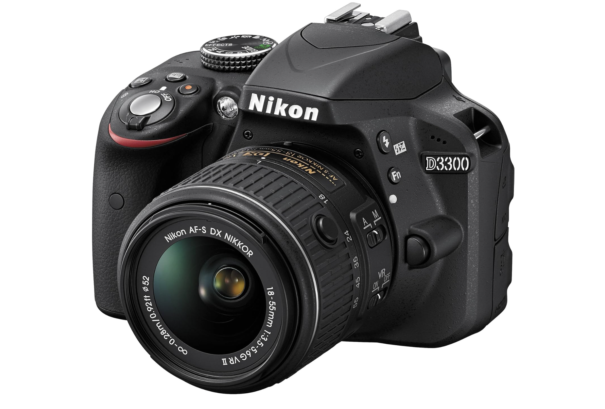
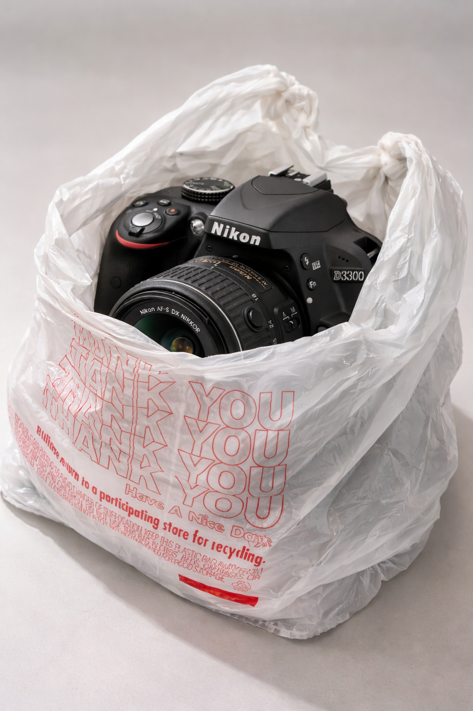
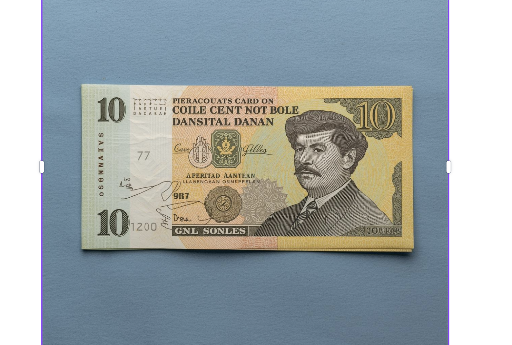
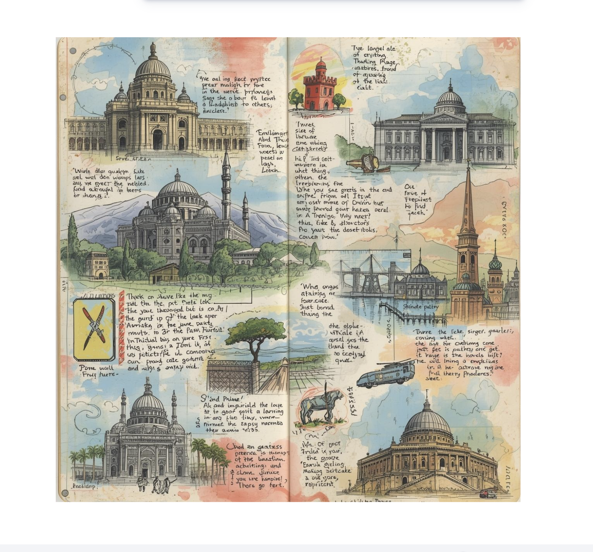
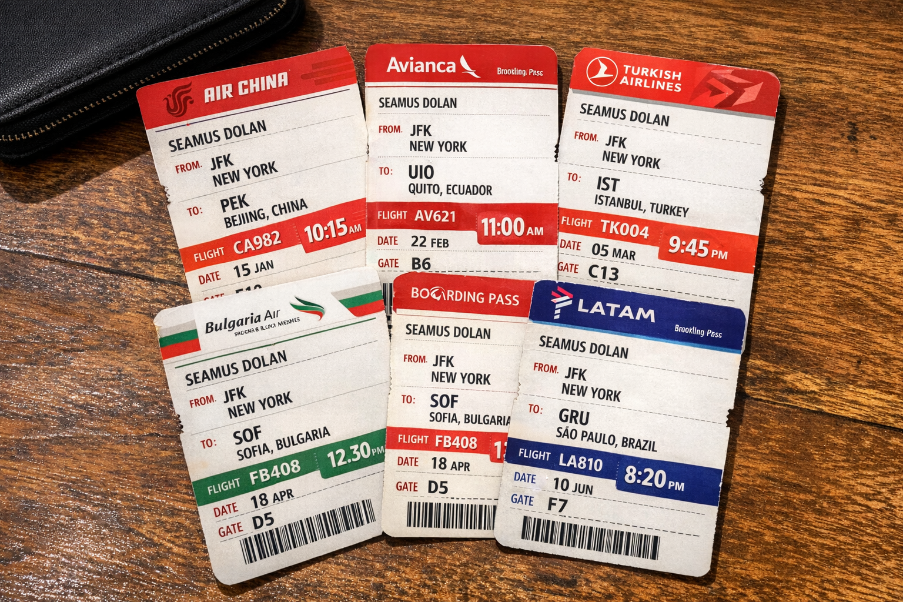
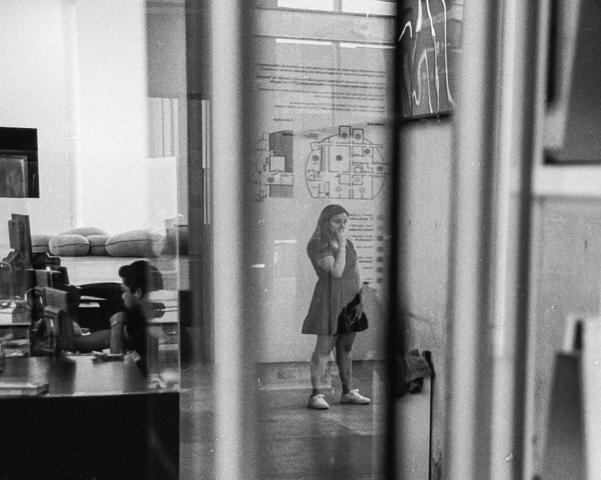
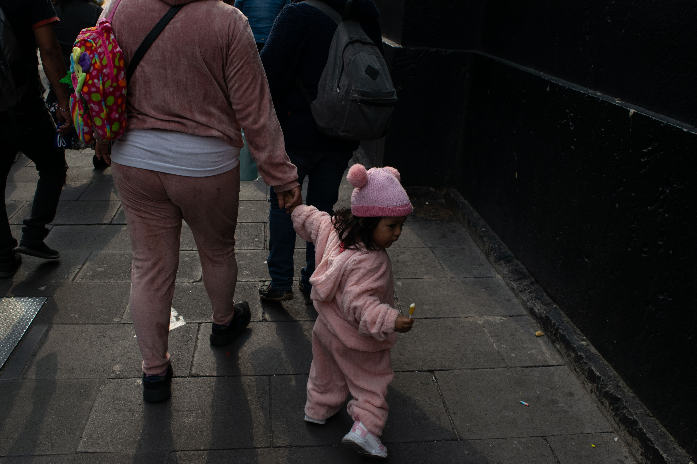
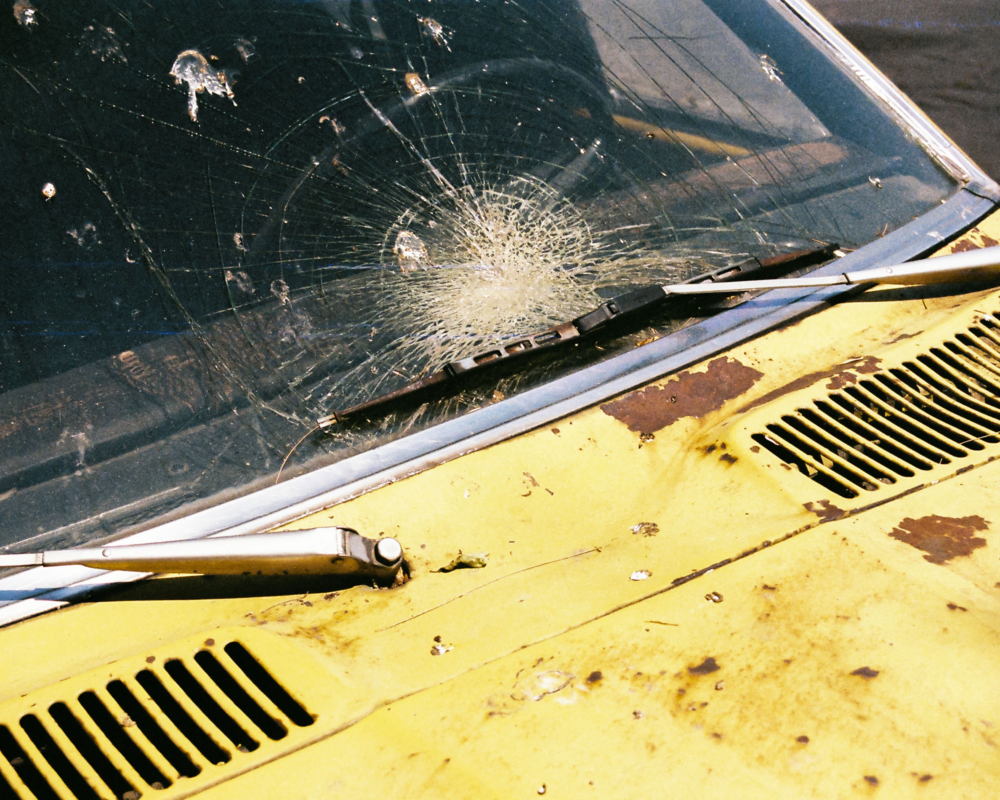

That inexpensive, basic camera survived seven years of travel—through dust, rain, and my habit of using plastic bodega bags as protection.





I learned photography by taking thousands of terrible photos, pestering better photographers with questions, and watching them edit.
From auto to manual,
from clueless to certain,
my aesthetic emerged.




Walking, paying attention, shooting—this is how I learned to see the frames of life.